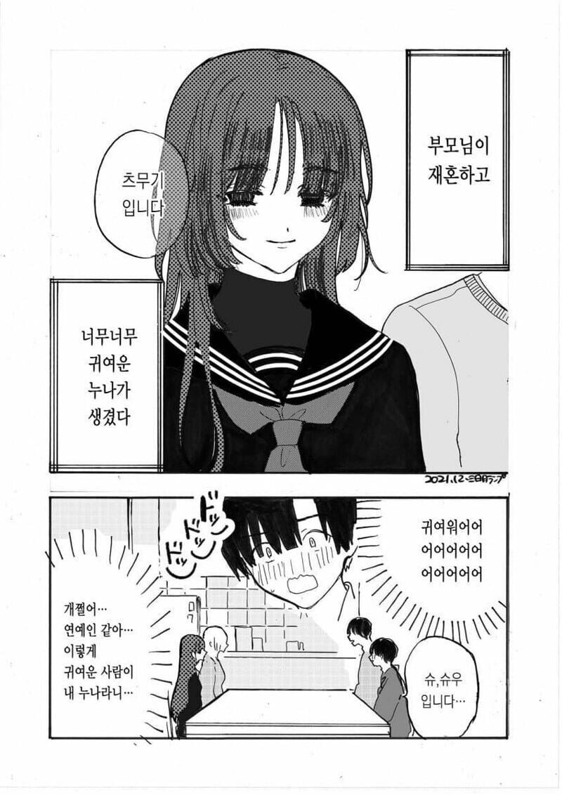
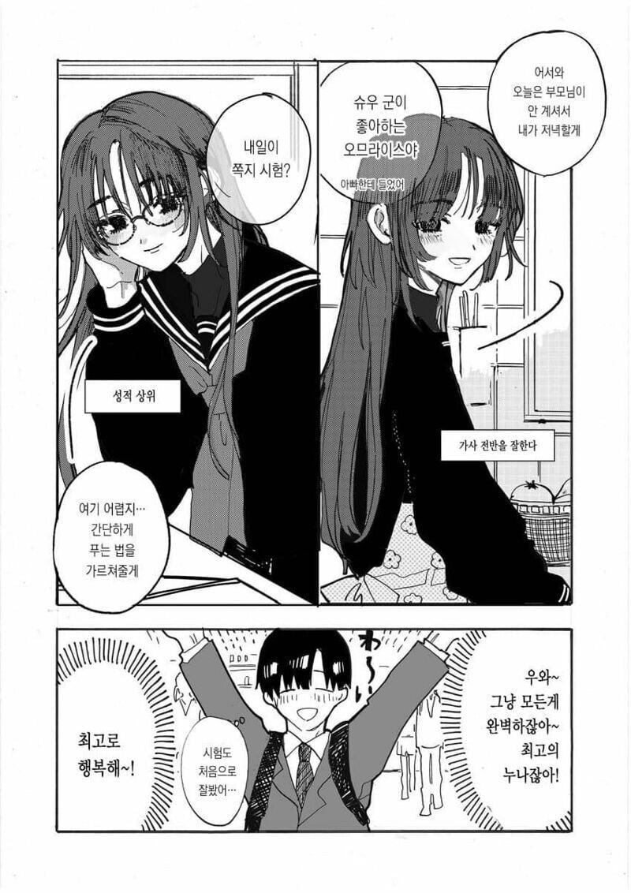
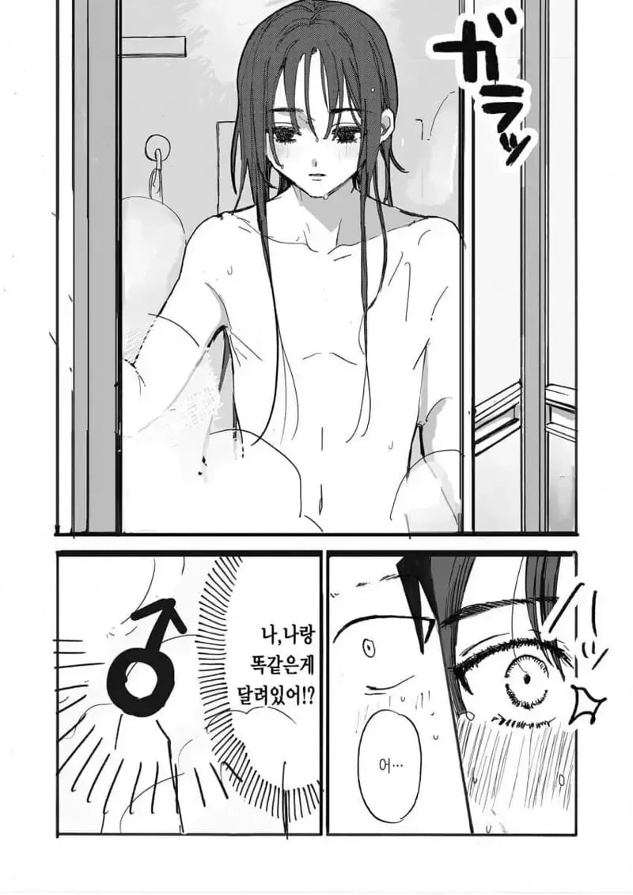
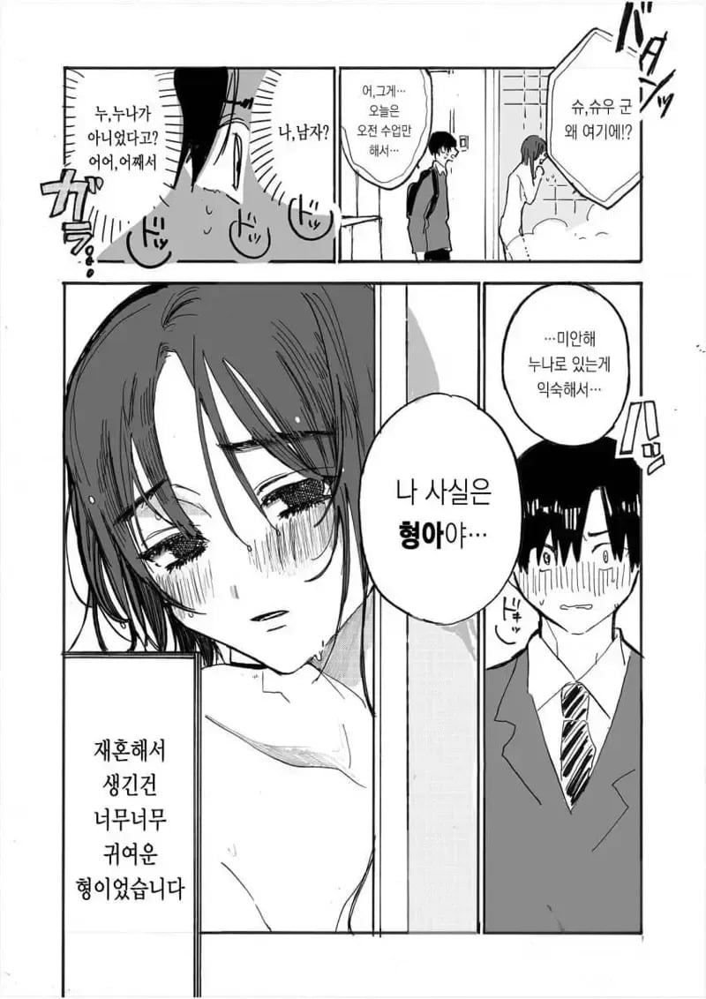
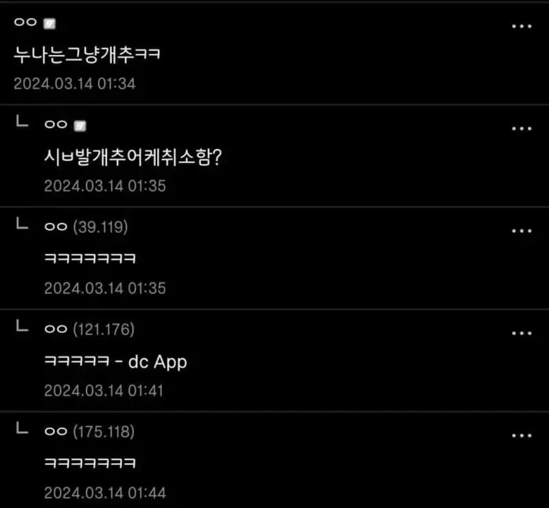
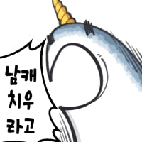

아이~ 싯팔!





아이~ 싯팔!

개추줬다 고추라 놀랐네
시발 우리까지 속이려고 가지 안달아둔거 개 열받네 그냥 아.
교복을 씨발새꺄 남자가 저런걸 왜 쳐입어
병신새낀가봄
저는 누나의 비밀을 굳이 들추지 않았습니다. 저는 괜찮지만, 아버지는 다를지 모릅니다. 지금 집은 평온합니다. 자상한 누나(형)가 공부를 가르쳐주고, 새엄마가 해주는 "집밥"은 따스합니다. 괜한 불씨를 만들고 싶지 않았습니다.
어느 날, 집에 체육복을 두고 오는 바람에 점심 시간을 이용해 집으로 돌아가 잠깐 집에 들렀습니다. 제 방으로 가기 위해 복도를 지나는 도중... 욕실 문이 열리더니 새엄마의 형상이 나타났습니다. 모락모락 피어오르는 김 사이로 드러난 새엄마의 고간에선 라이트세이버... 아니 라이트몽당연필 같은 게 보였습니다.
"캬아악, 슈, 슈우 군 왜 여기에?"
새엄마는 깜짝 놀라 재빠르게 욕실 문 안쪽으로 몸을 숨겼고, 빨개진 얼굴을 문 너머로 빼꼼 내밀었습니다.
나이가 느껴지면서도 아름다운 미모의 새엄마. 언제나 온화한 미소와 어른스러운 자세로 절 대해주셨습니다.
그런 어른이, 이렇게 찐으로 당황하여 이렇게 소녀와도 같은 귀여운 얼굴을 보이고 있으니 제 시선의 초점은 불나방처럼 흔들리면서도 눈앞의 불꽃 같이 새빨간 새엄마의 얼굴을 놓치지 않았습니다.
아니, 그보다 아까... 봤던 그건. 리모컨 건전지 같은... 그건...
"미안해. 아줌마로 있는 게 익숙해서... 나 사실은 아저씨야..."
그렇습니다. 이 집엔 사실 여자는 없었던 겁니다. 이 집에서 나는 소리는 빨딱빨딱 덜렁덜렁밖에 없었습니다.
이분은 새엄마가 아니라 새아빠셨습니다. 선생님이 저에게 '느그 아버지 뭐 하시노'라고 물어본다면 여장이라고 대답할 수 있게 됐습니다.
"네 아버지는 모르니 비밀로 해주지 않을래...?"
"네...?"
새아빠가 욕실에서 나왔습니다. 욕실에 속옷은 있었는지 속옷 차림으로 나오셨습니다. 요염한 여우눈으로 멋쩍은 미소를 지은 채.
납작한 가슴에는 볼륨감이라곤 전혀 없는 납작한 빨간 브래지어가 있었습니다. 팬티는 틀림없이 여성용 삼각이지만, 살짝 뾰루지 같은 볼륨감이 있었습니다.
김의 열기에 더욱 야릇한 분위기가 되어버렸습니다. 김의 열기가 마치 밥 다 된 전기밥솥이 떠오릅니다.
새아빠가... 해주는 집밥은 따스할 것 같습니다...

ㅋㅋㅋㅋㅋㅋㅋㅋㅋㅋㅋㅋㅋㅋㅋ
그 씨발 가지표시는 이제 죽였냐?
zzzzzzzzzzzzzzzzzzzzzzzzzzzzzzzz
개추가 아니라 고추네
그런가... 누나로 보이는가...


다급한 취소 요청 ㅋㅋㅋㅋㅋ
ㅋㅋㅋㅋㅋㅋㅋㅋㅋㅋ